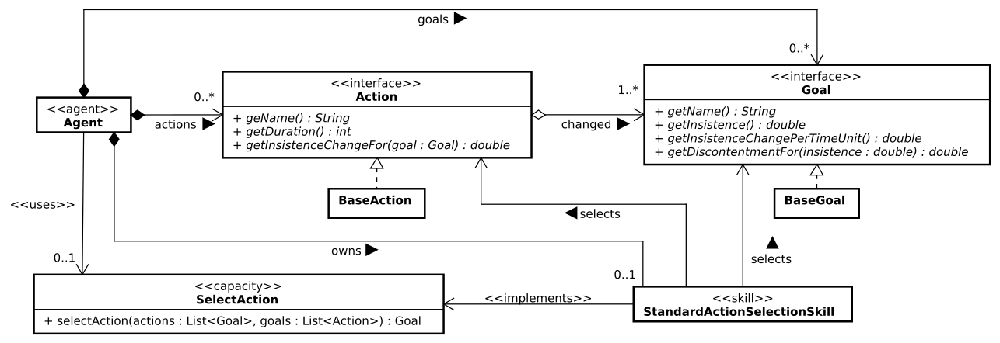

Time-based Simple Goal-oriented Behavior API
This reference documentation is dedicated to a Goal-Oriented Behavior (GOB) that is used in video games, and is a simple action selection mechanism including time constraints.
To use this part of the API, you have to include a specific dependency in your SARL project. The Maven dependency to add is:
<dependency>
<groupId>io.sarl.sdk</groupId>
<artifactId>api.gametgob</artifactId>
<version>0.15.0</version>
</dependency>
Basically, an action selection mechanism enables the agent to select the best action to be realized in order to archieve one of its goals.
1. General TGob Metamodel
Goals and actions are defined in the TGob metamodel, as illustrated by the UML class diagram below:

The agent has goals and knows actions.
The concepts of Goal and Action are defined as object-oriented interfaces, i.e., they impose the definition of functions but do not provide the concrete implementation.
The SARL API designers have defined these two concepts as interface to enable the SARL developpers to define their own implementation of the goals and actions.
However, a base implementation is provided for helping the SARL developpers to build an agent that is applying the TGob mechanism.
They take the form of the two implementation classes BaseGoal and BaseAction.
1.1. Goal
The concept of goal is a fundamental aspect of agent behavior in video games and artificial intelligence research. The major key components that are related to the goals are:
- Goals or Motives: Agents can have one or more goals or motives. These goals represent what the agent wants to achieve or accomplish in the game world. Goals could include actions like eating, regenerating health, or killing enemies. These goals are what drive the agent’s actions and decisions.
- Multiple Active Goals: Agents can have multiple goals simultaneously. This means that an agent may be pursuing several objectives at the same time, each with its own level of importance or insistence.
- Importance or Insistence: Each goal is associated with a numerical value that represents its level of importance or insistence. A goal with a high insistence value will have a stronger influence on the agent’s behavior. This numeric representation helps prioritize which goals the agent should focus on.
- Goal Fulfillment: The agent’s primary objective is to fulfill its goals or reduce their insistence. In other words, agents will take actions and make decisions in the game world to achieve their goals. The more important a goal is (higher insistence), the more the agent will strive to accomplish it.
- Goal Satisfaction: Some games allow goals to be completely satisfied, such as when an enemy is killed. In contrast, other games may have fixed, always-present goals that are not entirely satisfiable but can have their insistence reduced. For example, an agent may always have a low-insistence goal of “get healthy” even when they are already healthy. A goal with zero insistence is considered completely satisfied.
- Blurring Goals and Motives: The distinction between goals and motives can be blurred in the context of creating game agents. In some artificial intelligence research, motives may give rise to goals based on a agent’s beliefs or motivations. However, for the purpose of designing game character behavior, goals and motives are often treated as the same thing or closely related concepts.
- Insistence Values: The use of real numbers to represent insistence values allows for more nuanced decision-making in agent behavior. It enables agents to prioritize goals based on their importance, and this can lead to more dynamic and engaging gameplay experiences.
- On/Off Goals: While real numbers are used to represent insistence values, some games with many agents and goals may opt for a simpler binary approach (on/off) to save storage space. This means that goals are either active or inactive without nuanced insistence values.
The concept of goal is defined as:
interface Goal {
def getDiscontentmentFor(double) : double
def getInsistence : double
def getInsistenceChangePerTimeUnit : double
def getName : String
def setInsistence(double)
}
1.2. Actions
The concept of action is a fundamental aspect of agent behavior in video games and artificial intelligence systems. The major key components that are related to the actions are:
- Possible Actions: Actions are a set of activities or behaviors that an agent can perform within the game world. These actions can be generated centrally by the game’s AI system or by objects and entities within the game world. The availability of actions can vary depending on the agent’s current context and the state of the game.
- Action Generation: In some games, actions are generated by objects or entities in the game world. For example, a kettle may add a “boil kettle” action, or an enemy may introduce an “attack me” action. These actions become part of the agent’s list of possible choices.
- Dynamic Action Availability: The availability of actions can depend on the current state of the game and theagent’s situation. For instance, an empty oven may offer an “insert raw food” action, but it would check if the agent is carrying raw food before presenting this action. If the oven contains raw food, it may expose a “cook food” action instead.
- Action Dependencies: Some actions may have dependencies or prerequisites. For example, unlocking a door may require an “insert key” action before the “unlock” action becomes available. These dependencies add realism and complexity to agent interactions with the game world.
- Rating Actions: Each action is rated against the agent’s motives or goals. This rating reflects how much impact the action would have on a particular motive. For example, a “playing with the games console” action might increase the agent’s happiness but decrease their energy. This rating helps the agent prioritize actions based on their current goals and motives.
- Atomic Actions: In action games, actions are often more atomic or granular. Each action corresponds to a specific game mechanic or behavior. For instance, a “shoot” action can fulfill a “kill enemy” goal, and a “spring-trap” action may have a similar effect. These actions are often essential for combat and gameplay dynamics.
- Action Sequences: Some games allow actions to be composed of sequences of sub-actions. For example, a “shoot” action might involve sub-actions like “draw weapon,” “aim,” and “fire.” This allows for more detailed and realistic execution of complex actions in the game.
- Goal Fulfillment: Actions promise to fulfill specific goals or motives. These goals may be achieved through a sequence of actions. For example, picking up raw food promises to fulfill the hunger goal, but it may require subsequent actions like cooking the food, removing it from the oven, and eating it to fully satisfy the hunger goal.
The concept of action is defined as:
interface Action {
def getDuration : int
def getInsistenceChangeFor(Goal) : double
def getName : String
}
1.3. Capacity for selecting an agent
When the agent would select an action according to the TGob mechanism, it has to use the capacity SelectAction.
capacity SelectAction {
def selectAction(List<Action>, List<Goal>) : Action
}
1.4. Skill for Simple Action Selection
The skill that is implementing the SelectAction capacity is StandardActionSelectionSkill.
Base Algorithm
The suggested approach for agent decision-making involves selecting actions based on the urgency of the agent’s goals. The agent prioritizes goals by their insistence levels, aiming to either fully satisfy the most pressing goal or significantly reduce its insistence. This prioritization is done using a heuristic estimate of utility, which is determined by the expected change in goal insistence that each action promises. The agent seeks the action with the highest utility to achieve its objectives. If multiple actions can fulfill a goal, the agent may randomly choose among them or select the first one encountered.
def selectAction(actions : List<Action>, goals : List<Goal>) : Action {
// Find the goal to try and fulfil
var topGoal : Goal = null
for (goal : goals) {
if (topGoal === null || goal.insistence > topGoal.insistence) {
topGoal = goal
}
}
// Find the best action to take
var bestAction : Action = null
var bestUtility = 0.0
for (action : actions) {
// We invert the change because a low change value
// is good (we want to reduce the value for the goal)
// but utilities are typically scaled so high values
// are good.
var utility = -action.getInsistenceChangeFor(topGoal)
// We look for the lowest change (highest utility)
if (bestAction === null || utility > bestUtility) {
bestUtility = utility
bestAction = action
}
}
return bestAction
}
This approach is simple, fast, and can give surprisingly sensible results, especially in games with a limited number of actions available. It has two major weaknesses: it fails to take account of side effects that an action may have, and it doesn’t incorporate any timing information.
Introducing Overall Utility: the discontentment
Let the following example, provided in the book “Artificial Intelligence for Games”, by Ian Millington (published by MK):
Goal: Eat = 4
Goal: Bathroom = 3
Action: Drink-Soda (Eat -2; Bathroom +3)
Action: Visit-Bathroom (Bathroom -4)
The agent has two goals Eat and Bathroom, with associated insistences of 4 and 3 respectively.
The agent has also access to two actions, that enable to decrease the insistences of goals.
It is important to consider the side effects of agent actions in decision-making. Agent should prioritize actions that reduce their overall discontentment level, which is calculated based on all goal insistence values. High insistence values contribute more to the agent’s discontentment. To achieve this, the concept of discontentment may be introduced, based on the squaring the goal values, which accentuates high-priority goals and prevents medium-priority goals from overshadowing critical ones. This approach ensures that agents make more sensible decisions in complex situations, even if it might be embarrassing or detrimental in the short term.
For example, when the action below is applied, we could compute associated discontments:
Drink-Soda: Eat = 2, Bathroom = 5, Discontentment = 29Visit-Bathroom: Eat = 4, Bathroom = 0, Discontentment = 16
To make a decision, each possible action is considered in turn. A prediction is made of the total discontentment after the action is completed. The action that leads to the lowest discontentment is chosen, here Visit-Bathroom.
This action is selected instead of Drink-Soda, even if the Eat insistence is the highest value.
To include discontentment in the computation, the action selection algorithm must be rewritten as:
def selectAction(actions : List<Action>, goals : List<Goal>) : Action {
// Go through each action, and calculate the discontentment
var bestAction : Action = null
var bestDiscontentment = 0.0
for (action : actions) {
var discontentment = calculateDiscontentment(action, goals)
if (bestAction === null || discontentment < bestDiscontentment) {
bestDiscontentment = discontentment
bestAction = action
}
}
return bestAction
}
def calculateDiscontentment(action : Action, goals : List<Goal>) {
var discontentment = 0.0
for (goal : goals) {
var newInsistence = goal.insistence + action.getInsistenceChangeFor(goal)
discontentment += goal.getDiscontentmentFor(newInsistence)
}
return discontentment
}
Introducing Time in the Decision Process
To make informed choices, an agent needs to be aware of how long an action will take to complete. For instance, an energy-deficient agent may prefer a quick energy boost from eating a chocolate bar rather than spending hours sleeping. Actions may expose their durations, allowing agents to factor this into their decision-making process. Timing in games is often divided into two components: the time it takes to complete an action and the time it takes to reach the location where the action can start. Calculating the journey time to begin an action is not always straightforward. It can be estimated using heuristics, such as a straight-line distance-based guess, or calculated accurately through pathfinding algorithms. However, pathfinding for every possible action in a game, especially in large game levels with numerous objects and actions, can be impractical. Therefore, heuristics are often used as a practical alternative.
To use time in ythe agent decision making, two choices may be considered:
- incorporate the time into the discontentment or utility calculation, or
- prefer actions that are short over those that are long.
This is relatively easy to add to the previous structures and algorithms by modifying the calculateDiscontentment function to return a lower value for shorter actions.
A more interesting approach is to take into account the consequences of the extra time. In some games goal values change over time: a character might get increasingly hungry unless
it gets food, a character might tend to run out of ammo unless it finds an ammo pack, or a character might gain power for a combo attack the longer it holds its defensive position.
When goal insistences change on their own, an action not only directly affects some goals, but the time it takes to complete an action may cause others to change naturally.
This can be factored into the discontentment calculation. If it is known how goal values will change over time, then those changes could be included into the discontentment calculation.
Let the following example, provided in the book “Artificial Intelligence for Games”, by Ian Millington (published by MK):
Goal: Eat = 4 changing at +4 per hour
Goal: Bathroom = 3 changing at +2 per hour
Action: Eat-Snack (Eat -2) 15 minutes
Action: Eat-Main-Meal (Eat -4) 1 hour
Action: Visit-Bathroom (Bathroom -4) 15 minutes
The computation of the discontentment for each action is:
Action: Eat-Snack, Eat = 2, Bathroom = 3.5, Discontentment = 21.25Action: Eat-Main-Meal, Eat = 0, Bathroom = 5, Discontentment = 25Action: Visit-Bathroom, Eat = 5, Bathroom = 0, Discontentment = 25
The agent will clearly be looking for some food before worrying about the bathroom. The quick snack is now the action of choice. The long meal will take so long that by the time it is completed, the need to go to the bathroom will be extreme. The overall discontentment with this action is high. On the other hand, the snack action is over quickly and allows ample time. Going directly to the bathroom isn’t the best option, because the hunger motive is so pressing.
To include time support, the previous algorithm must be adapted as follows:
def calculateDiscontentmentFunction(action : Action, goals : List<Goal>) {
var discontentment = 0.0
for (goal : goals) {
var newInsistence = goal.insistence + action.getInsistenceChangeFor(goal)
newInsistence = action.duration * goal.getInsistenceChangePerTimeUnit
discontentment += goal.getDiscontentmentFor(newInsistence)
}
return discontentment
}
2. Creating an Agent using TGob
For creating an agent that is using the TGob mechanism, please refer to the tutorial on Goal-oriented Action Selection from Video Game Field.
3. Version Specification
- Specification: SARL General-purpose Agent-Oriented Programming Language (“Specification”)
- Version: 0.15
- Status: Stable Release
- Release: 2025-09-10
4. Legal Notice
Copyright © 2014-2025 SARL.io, the Original Authors and Main Authors.
Documentation text and medias are licensed under the Creative Common CC-BY-SA-4.0; you may not use this file except in compliance with CC-BY-SA-4.0. You may obtain a copy of CC-BY-4.0.
Examples of SARL code are licensed under the Apache License, Version 2.0; you may not use this file except in compliance with the Apache License. You may obtain a copy of the Apache License.
You are free to reproduce the content of this page on copyleft websites such as Wikipedia.
Generated with the translator docs.generator 0.15.0.